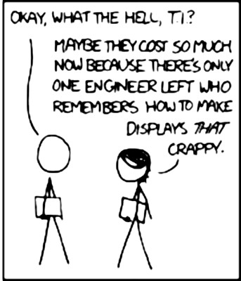
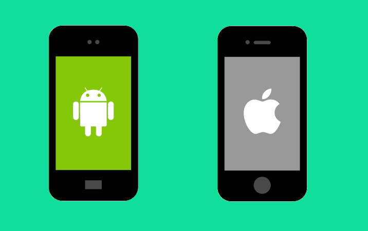
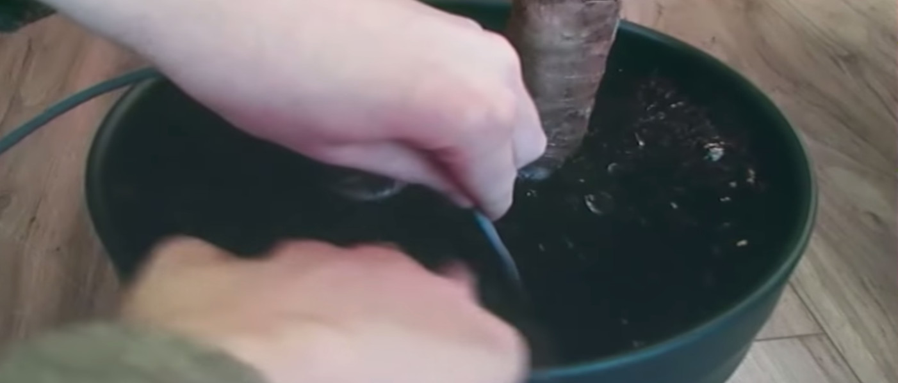

/usr/bin/whoami ?
Luis Montes
 @MONTESLU
@MONTESLU 
❤️


Google Pixel 4 XL
- Snapdragon 855 CPU
- 2.5 million x the RAM
- 128 GB storage
- Multiple browsers!
- Progressive Web Apps!
Apple iPhone 11 Pro Max Ultra Extreme
- Apple A13 Bionic (7 nm+) Hexacore !
- 1.7 million x the RAM
- 512 GB storage!
- Mobile Safari
- pRoGrEsSiVe WeB aPpS
why bother with PWA/offline?
Lie-Fi üì∂

navigator.onLine = true
PWA to the rescue?
- ✅Works offline
- ✅No app stores!
- ü§îPeer comunications?
- ü§îFile sharing?
Peer to Peer - ask
const scanner = navigator.peers.scan();
scanner.on('peer-found', async (peer) => {
const connection = await peer.connect();
connection.send('waddup!');
});
Peer to Peer - accept
navigator.peers.on('peer-request', async (peer) => {
const connection = await peer.acceptDialog();
connection.send('hey!');
});
simple right?
Web Bluetooth
- Since Chrome 56 stable!
- Stable on MS Edge since Wednesday.
- ü§î p2p ?
Web NFC
- Partial implementation in chrome.
- ü§î p2p ?
Peer to Peer - over NFC
const reader = new NDEFReader();
const writer = new NDEFWriter();
Web USB ?

LoRa...
- ✅766 km, record
- ✅More bandwith
- ✅in IoT conf badges
- ü§îFrom the web?
- PWA (react)
- xterm.js
- Node serial shim (noopkat)
- LoRa hardware + esp32
Web Assembly

getUserMedia({video: true})
üì∑
- PWA (react)
- File access (FileReader.readAsDataURL(...))
- QR generation (canvas)
- webworker QR detection...
Web RTC

W3C Working Group - 23 July 2015
BeakerBrowser.com
with datPeers API